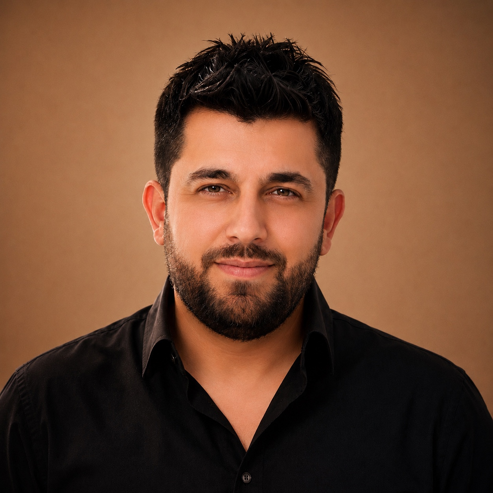

YENİ PARTİ Diyarbakır Yenişehir İlçe Başkanlığı, açık, düzenli ve kurumsal iletişimi esas alır.
Resmî İlçe Başkanlığı
Diyarbakır Yenişehirİlçe Başkanlığı
YENİ PARTİ’NİN YENİŞEHİR’İ
Yenişehir gündemi, saha çalışmaları, kurumsal duyurular ve ilçe başkanlığına ilişkin resmî bilgilendirmeler için kurumsal dijital iletişim alanı.
01 / Kurumsal
Yenişehir İlçe Başkanlığı
Kurumsal çalışmaların, saha temaslarının, duyuruların ve Yenişehir gündemine ilişkin bilgilendirmelerin tek bir resmî dijital kimlik altında sunulduğu yapı.
Kurumsal Kimlik
Tutarlı, anlaşılır ve resmî iletişim standardı.
Saha İletişimi
Mahalle, esnaf, kurum ve vatandaş temaslarının düzenli paylaşımı.
Yenişehir Gündemi
İlçeye ilişkin duyuru ve bilgilendirmeler için kurumsal alan.
Resmî Kanallar
İletişim ve güncel paylaşımlar için doğrulanabilir bağlantılar.

İLÇE BAŞKANI
02 / İlçe Başkanı
Erdil
Baydemir
YENİ PARTİ Diyarbakır Yenişehir İlçe Başkanı
İlçe başkanlığına ilişkin saha, kurum ve vatandaş temasları; kurumsal duyurular ve Yenişehir gündemine yönelik çalışmalar resmî kanallar üzerinden kamuoyuyla paylaşılır.
Instagram hesabı03 / Yenişehir
Gündem & Çalışmalar
Yenişehir’e ilişkin resmî paylaşımlar konu başlıklarına göre düzenli, anlaşılır ve erişilebilir bir yapıda sınıflandırılır.
YENİŞEHİR / RESMÎ PAYLAŞIMLAR
Güncel gelişmeler tek resmî akışta.
Saha çalışmaları, ziyaretler, duyurular ve Yenişehir gündemine ilişkin güncel içerikler resmî Instagram hesabında yayımlanır.
Güncel paylaşımları gör ↗Yenişehir Gündemi
İlçeyi ilgilendiren önemli gelişmeler ve kurumsal bilgilendirmeler.
Saha Çalışmaları
Mahalle, esnaf ve vatandaş temaslarına ilişkin kurumsal paylaşımlar.
Ziyaretler
Muhtar, kurum ve STK ziyaretlerine ilişkin resmî bilgilendirmeler.
Duyurular
İlçe başkanlığının resmî açıklama, duyuru ve bilgilendirme içerikleri.
04 / İletişim
Resmî iletişim kanalları
Görüş, öneri ve kurumsal iletişim için aşağıdaki resmî kanalları kullanabilirsiniz.
YENİŞEHİR / DİYARBAKIRBize
Bize
Ulaşın.
İlçe başkanlığıyla iletişim için e-posta ve resmî sosyal medya hesabı üzerinden ulaşabilirsiniz.
E-POSTAyenipartiyenisehir21@gmail.com↗INSTAGRAM@yeniparti.yenisehir21↗
KONUMYenişehir / Diyarbakır•
BAŞKANErdil Baydemir•